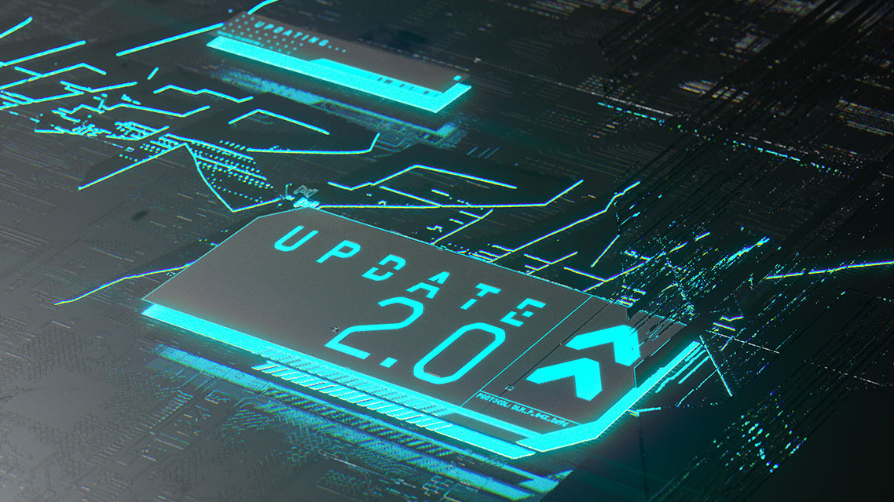
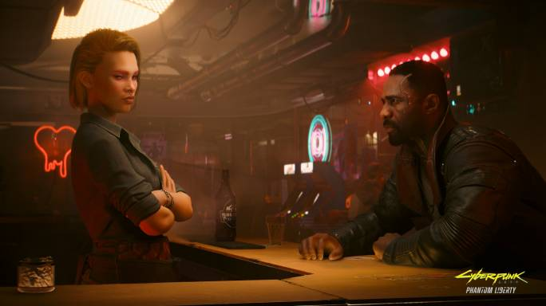
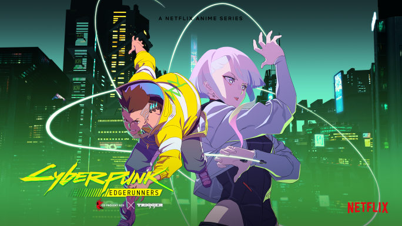
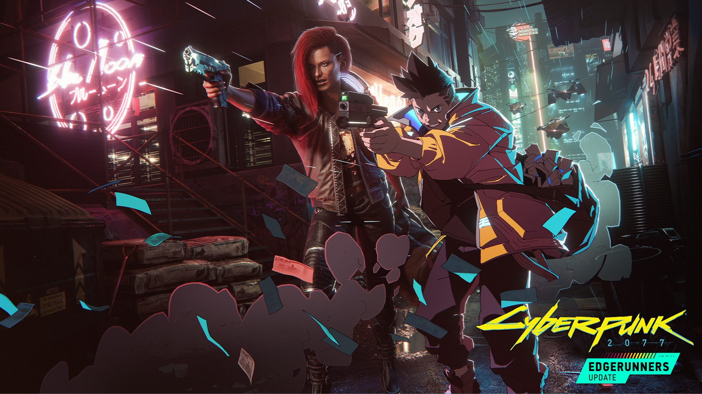

LA MàJ 2.0
La mise à jour 2.0 est là ! Elle est disponible gratuitement pour tous les détenteurs de Cyberpunk 2077 sur Xbox Series X|S, PlayStation 5 et PC. Découvrez des mécaniques de gameplay inédites et améliorées pour vivre vos rêves cyberpunk les plus fous et créer un style de jeu unique, dont une refonte du système de police, des combats de véhicules explosifs, des systèmes d'avantages et de matériel cybernétique complètement repensés, et bien plus !

NOUVEAU DLC !
Phantom Liberty est une nouvelle aventure qui vient ajouter une touche de thriller et d'espionnage à Cyberpunk 2077. Incarnez de nouveau V, mercenaire cyberpunk, et embarquez pour une périlleuse mission d'espionnage et d'intrigues politiques afin de sauver la présidente des NUSA. Dans le dangereux quartier de Dogtown, vous devrez forger des alliances au cœur d'un tourbillon de rêves brisés et de jeux de pouvoir politiques. Serez-vous à la hauteur ?

CYBERPUNK EDGERUNNERS
CYBERPUNK EDGERUNNERS RACONTE EN 10 ÉPISODES L'HISTOIRE D'UN GOSSE DES RUES QUI TENTE DE SURVIVRE DANS UNE VILLE DU FUTUR OBSÉDÉE PAR LA TECHNOLOGIE ET LES MODIFICATIONS CORPORELLES. ALORS QU'IL A TOUT À PERDRE, IL CHOISIT DE RESTER EN VIE EN DEVENANT EDGERUNNER, UN MERCENAIRE HORS-LA-LOI AUSSI APPELÉ CYBERPUNK.

PATCH 1.6: EASTER EGG EDGERUNNERS
Avec la mise à jour 1.6 de Cyberpunk 2077, intitulée Edgerunners, plusieurs éléments liés à l'anime ont été ajoutés en jeu, ce qui permet d'obtenir la fameuse jaquette jaune fluo d'ambulancier de David Ramirez, via une nouvelle quête annexe, ainsi que le fusil à pompe de Rebecca.